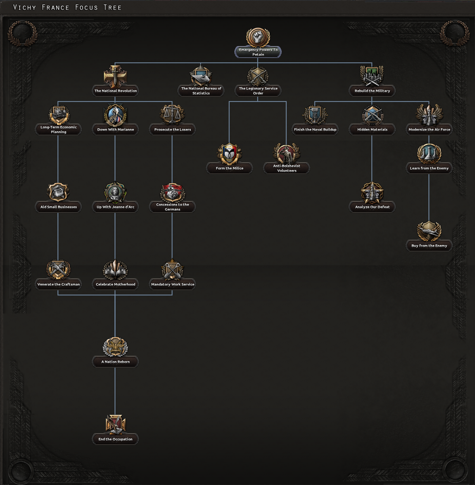

| 西欧 |
|
| 东欧 |
| 西欧 |
|
| 东欧 |
| 苏联 |
|
原页面：Vichy France
维希法国 is a country in Europe that is neither releasable nor formable and is instead created through an event chain which will start if  德国 defeats
德国 defeats  法国 (allied to the
法国 (allied to the  英国) in a war.
英国) in a war.
Once created, Vichy France will find itself in control of southern Metropolitan France as well as most of France's colonial empire. They will, however, also be shouldered with the heavy occupation costs levied by the Germans. They will also be lacking in industry compared to France and will also have to watch out for  自由法国, a French resistance movement led by general Charles de Gaulle who will try to contest the Vichy regime's control over France and seek to overthrow it.
自由法国, a French resistance movement led by general Charles de Gaulle who will try to contest the Vichy regime's control over France and seek to overthrow it.
While weakened, if properly played, Vichy France is still capable of digging itself out of this morass and then either joining the Axis as an equal to Germany after asking them to end the occupation, defecting to the Allies and uniting with Free France, or taking a third option and regaining their honor by defeating Germany by themselves.
After the defeat of the allied armies in the  荷兰,
荷兰,  比利时和
比利时和 卢森堡 in 1940 and the British evacuation of their forces from Dunkirk to England, the French front collapsed. The forces of Germany were able to quickly overrun northern France, capturing Paris without a fight. With the French military teetering on the brink of collapse, the French government (having been evacuated from Paris to first to Tours, then to Bordeaux) concluded a ceasefire and subsequent armistice with Germany, effectively surrendering the whole country. The French government was allowed to remain in power, but its effective jurisdiction was limited to the unoccupied "Free Zone" in southern France— constituting roughly 45% of France's pre-war metropolitan territory.
卢森堡 in 1940 and the British evacuation of their forces from Dunkirk to England, the French front collapsed. The forces of Germany were able to quickly overrun northern France, capturing Paris without a fight. With the French military teetering on the brink of collapse, the French government (having been evacuated from Paris to first to Tours, then to Bordeaux) concluded a ceasefire and subsequent armistice with Germany, effectively surrendering the whole country. The French government was allowed to remain in power, but its effective jurisdiction was limited to the unoccupied "Free Zone" in southern France— constituting roughly 45% of France's pre-war metropolitan territory.
In the following months, the French government was extensively reorganized. Marshal Philippe Pétain became "Chief of State" (effectively making him both head of state of and head of government at the same time with both offices being merged into one), and a new constitution was drafted giving Pétain extraordinary powers. Using his extensive powers, Pétain effectively abolished the Third French Republic and replaced it with the "French State" (French: État Français) or the "French Nation (French: Nation Français)—colloquially known as 维希法国 (French: Régime de Vichy)—a unitary authoritarian dictatorship.
The Vichy regime would remain in place from its inception in 1940 to 1944, during which it attempted to carry out a series of social/societal transformation programs named the "National Revolution" and "National Regeneration". The Vichy regime enjoyed diplomatic recognition from the majority of the Axis and Allies and was recognized as the official government of the entirety of metropolitan France except for Alsace-Lorraine and Savoy, which were occupied and annexed by Germany and Italy, respectively.
Vichy France is created through an event chain which will start if  法国 is in a faction with
法国 is in a faction with  英国, at war with
英国, at war with  德国 and Germany controls the state of Ile de France (16). If this happens, France is given the option of collaborating with the Germans (which will create Vichy France if the Germans approve), continuing the fight regardless or proposing a union with Britain (which will create the Franco-British Union if both sides approve).
德国 and Germany controls the state of Ile de France (16). If this happens, France is given the option of collaborating with the Germans (which will create Vichy France if the Germans approve), continuing the fight regardless or proposing a union with Britain (which will create the Franco-British Union if both sides approve).
If France elects to collaborate with Germany, Germany will be given the choice between establishing the Vichy Regime and warring France into the ground. If Germany agrees to establish the Vichy Regime (which they most likely will),  法国 will be split into Free France and Vichy France. Both countries will load up a new National Focus Tree.
法国 will be split into Free France and Vichy France. Both countries will load up a new National Focus Tree.

 维希法国, has a unique national focus tree as part of
维希法国, has a unique national focus tree as part of  La Résistance. Once Vichy France completes the tree, however, it will switch over to the regular French national focus tree (with the 民族复兴 path unlocked)
La Résistance. Once Vichy France completes the tree, however, it will switch over to the regular French national focus tree (with the 民族复兴 path unlocked)
Vichy France's unique focus tree has 1 single branch:
When formed, Vichy France starts off with the following national spirit.
This national spirit can be removed though the national focus tree.
When formed, Vichy France will inherit all technology previously researched by  法国.
法国.
| 政党 | 意识形态 | 支持率 | 党派领袖 | 国名 | 是否执政？ |
|---|---|---|---|---|---|
| 激进党 | 22% | 皮埃尔·赖伐尔 | 法国 | No | |
| Parti Communiste Francais | 2% | 莫里斯·多列士 | 法国公社 | No | |
| 法兰西主义运动 | 76% | 菲利普·贝当 | 维希法国 | 是 | |
| 中立主义 | 0% | 通用 | 维希法国 | No |
维希法国 的可能国家领袖。
的可能国家领袖。
| 意识形态 | 肖像 | 名称 | 党派 | 特质 | 效果 | 可用 |
|---|---|---|---|---|---|---|
法西斯主义 |
Philippe Petain | Mouvement Franciste (MNS) | 可通过事件French Armistice after German Victory上台 |
In La Résistance, Vichy France starts off as independent and is initially not part of any faction.
At the end of its National Focus tree, however, it will receive the choice between joining the Axis, defecting to the Allies, or starting down on the path towards creating a 拉丁协约 with  意大利,
意大利,  西班牙和
西班牙和 葡萄牙.
葡萄牙.
As for the military, Vichy France's military situation is a bit unpredictable, as Vichy France is only created if France is capitulated by Germany, which will cause the majority of the French military to be dismantled. Vichy France will gain control of a portion of the French forces but it is not possible to predict what divisions Vichy France will get. Regardless of what Vichy France gets, it will usually only be left with a few leftover fragments of the previous french military and will thus have to rebuild it.
Vichy France will start off with the following economy laws:
| 征兵法案 | 贸易法案 | 经济法令 |
|---|---|---|
|
|
|
Vichy France will also retain whatever industry and resources that end up within its zone of jurisdiction (the rest will end up under German occupation).
Vichy France's zone of jurisdiction is initially limited to the following states within Metropolitan France:
In addition to these, Vichy France will also gain control of most of France's colonial empire (Free France will gain control of French Guyana and a handful of other island territories)
Once Vichy France completes its National Focus Tree, however, they will regain control of all of Metropolitan France with the exception of Alsace-Lorraine and Savoy, which will be annexed by Germany and Italy, respectively.
In this particular situation, Vichy France finds itself disfigured by honour, strength and lands. At a certain time if it comes into its senses, Free France will merely declare war upon Vichy France to take back what is rightfully theirs. By pressure and by focuses. Or so it thinks depending on the players decisions. The obvious choices for the fascist state is to rebuilt and assist  德意志国 to defeat the Allies in the current war.
德意志国 to defeat the Allies in the current war.
In this particular scenario all has not been lost. A small infantry, a decent chunk of the navy and possibly the airforce will stay on Vichys side. Along with the rest of the Metropolitan Area, the colonies and a couple of generals, admirals, chiefs of staff that would fill the blank ranks. So to speak, the French industry has gone up to the Germans, and the current possession of the Metropolitan France by the Vichy is inept. It is best to start and build on civilian factories to face the consumer debuff that has been brought upon itself. Use concession decisions and bonuses and research the necessary equipment. The colonies that are almost all in Vichy possession will soon fall onto Free Frances hands, by focus, and it is advised to built up on mainland rather than on colonies. Indochina is a guaranteed lost cause, which it will be claimed either by Free France or Japan. Take the necessary focuses and make sure the focus "End the Occupation" is taken quickly before Vichy France losses more colonies or gets declared war upon.
Germany will inevitably accept the terms of returning the French lands to Vichy possession, with an exception of Alsace Lorraine. Almost everything has been gained, and Vichy France will find its French Focus back, with a particular notice of the branch heading for the right wing focuses. As an independent state, it has almost all that it needs as mentioned before, but lacking severely in advisors, even in ideology boosters and the illusive gentleman. The industry concerns on the other hand remain loyal. Germany will come up with the offer to join their faction, to which Vichy France has to accept. It is not recommended to join in any of the axis wars yet, as long as the debuffs have been worn off. With the United Kingdom across the channel, is it time to utilize and put to action the spy agency to do the collaboration government focus for a faster capitulation. Take the Spy Master mantle for extra operators in order to make the operations faster. And at the same time, train and spawn troops and air force(Fighters), to make sure to guard the coast including Corsica, and having enough to perform a naval invasion on British soil.
The last defining war with the British was clearly a century ago, but the chance to restore the honour shall be redone. The naval invasion surely will go unnoticed, and prior to join Germanys war, it is better to use the navy and air force to assert total control on the French Channel. At the same time, organize a few naval invasion spots, notably in Dunkirk and Cherbourg, and have a handful of troops at disposal. As the channel supremacy is taken care off, the forces should land in a couple of coastal tiles, and if successfully rush to occupy more lands and make way for the wave of arriving troops. Rush and sweep all the way up north until Edinburgh falls to the French forces, and capitulate the United Kingdom. Establish them as a protectorate in agreement with your collaboration goal and to preserve manpower for the army.
Now the Allies leader control has been taken by USA. And obviously the next war wont be with the French Opposition in Africa or Middle East, but rather going for the Americas. Certainly Greenland is in Allied possession, and to provide a proper naval invading base, it is best that Greenland is taken first. Same tactic established, naval supremacy first, and a couple of troops landing on Greenlandic soil. After that the next is Newfoundland. The land itself isnt connected by land and it cant be reinforced by Canadian or American troops. Which is another safe landing with a little resistance, if there is any, to ensure a proper and easier naval invasion on the North American soil. Next stop is to land on Halifax, there is a guaranteed resistance, but less defended than the US coasts, and in a good reason to take the Halifax strip first. Canadas capitulation comes as a second priority, maintain a border with them and pour the rest of the troops south to reach in a surprise attack on the US soil. Take the entirety of New England, rush to Washington DC and proceed to take the entirety of your troops and your fight to the West Coast until US capitulates. Once it is done, Canada will be less of a problem, therefore try to occupy them next before they liberate the US. With the Peace Conference next, take and annex back lands that were lost to Free France, and annex Canada and USA back together.

| 西欧 |
|
| 东欧 |
| 西欧 |
|
| 东欧 |
| 苏联 |
|